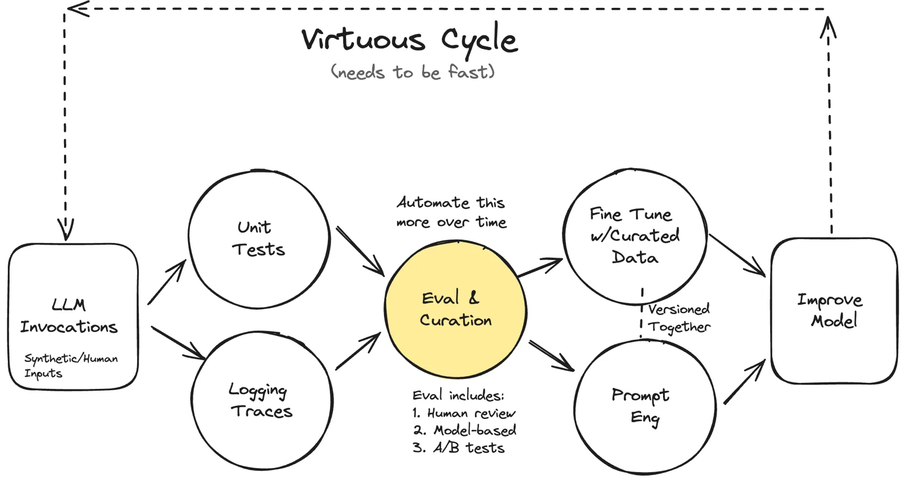
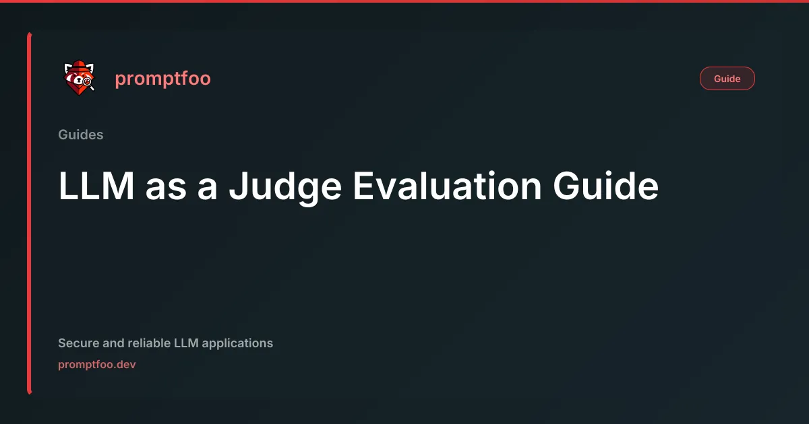
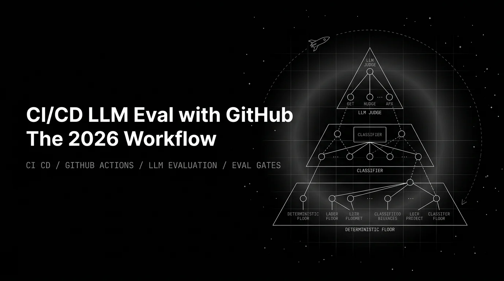

Evals — Vibes Don't Scale
A Complete Technical Session Blueprint — 7 modules for expert developers
The bottleneck in LLM evaluation is not tooling —
it's validation discipline.
Any of the eight viable open-source libraries can run your suite. None of them tell you whether the suite is measuring what you think it is. Golden dataset → judge validation → CI gates. That's the strict sequence. [1]

Mine real failures via error analysis; seed ~20 cases by hand, grow from production traces and synthetic generation; size for ~250 examples using statistical power math.

Write a binary decomposed rubric; neutralize position bias (20–40% flip rate) and verbosity attacks (91.3% fool rate); validate TPR/TNR against human labels — not accuracy.
8 viable OSS libs mapped: DeepEval ⭐16k, Promptfoo ⭐22k (OpenAI-acquired), Inspect AI (UK AISI), Langfuse, Braintrust. Scoring methods, biases, agent/RAG support, CI gating.

Path-scoped triggers, a layered eval pyramid, and statistical delta gates (mean drop + Welch's t + effect size). Gate on delta, not absolute floors — floors let regressions pass undetected.
3-act arc: vibe check passes → innocent wording edit → eval catches the regression. Promptfoo with --cache for determinism on conference Wi-Fi. 60-second pre-recorded fallback essential.
Eval pipelines are an attack surface: LLM judges susceptible to adversarial inputs, prompt injection, token-level exploits. EU AI Act high-risk provisions take effect August 2026.
Accuracy hides failures on imbalanced data. Precision/Recall for trade-offs; F1 for imbalance; PR-AUC for rare positives. Match the metric to the use case before picking a grader rubric.
"20 examples" can't move a launch decision.